Image credits
All photos come from Wikimedia Commons under free licenses (CC BY, CC BY-SA or public domain). They have been resized to 1600 px wide; works licensed CC BY-SA are shared under the same license.
 Patagonian coast and steppe in Monte León National Park, Santa Cruz
Patagonian coast and steppe in Monte León National Park, Santa Cruz
File: Monte Leon (1).jpg
Photo: Lara Fernández · CC BY-SA 4.0 · Wikimedia Commons Replica of the Nao Victoria in Puerto San Julián
Replica of the Nao Victoria in Puerto San Julián
File: Replica del Nao Victoria en San Julián 01.jpg
Photo: Gastón Cuello · CC BY-SA 4.0 · Wikimedia Commons View of Los Antiguos from the lookout, with Lake Buenos Aires in the background
View of Los Antiguos from the lookout, with Lake Buenos Aires in the background
File: Los Antiguos.JPG
Photo: Claudio Elias · Public domain · Wikimedia Commons The central stretch of the Deseado estuary
The central stretch of the Deseado estuary
File: Vista de la ria copia.jpg
Photo: Mikelzubi · CC BY-SA 4.0 · Wikimedia Commons Rock paintings of hands at the Cueva de las Manos, Río Pinturas
Rock paintings of hands at the Cueva de las Manos, Río Pinturas
File: SantaCruz-CuevaManos-P2210651b.jpg
Photo: Mariano · Public domain · Wikimedia Commons Petrified trunk in the Jaramillo Petrified Forest
Petrified trunk in the Jaramillo Petrified Forest
File: Tronco petrificado.JPG
Photo: Eassi · CC BY 3.0 · Wikimedia Commons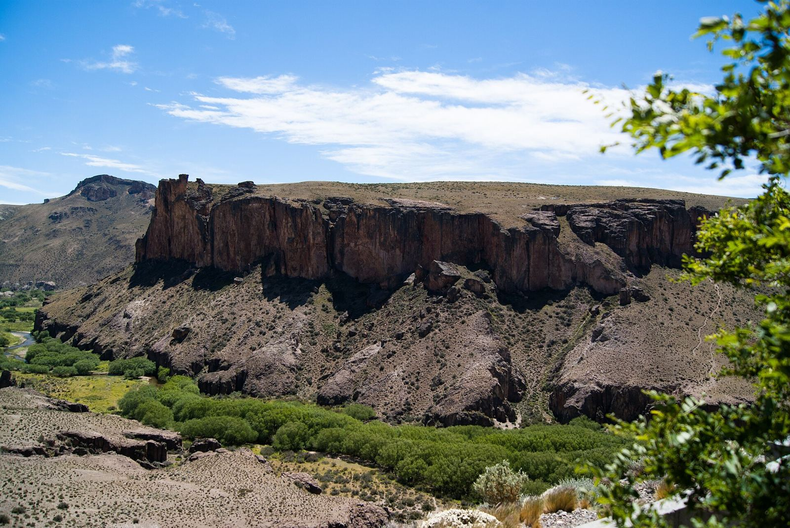
The Río Pinturas canyon, gateway to Parque Patagonia
File: Vista del cañadón del Rio Pinturas.jpg
Photo: LuigiStudio · CC BY-SA 4.0 · Wikimedia Commons National Route 40 crossing the Santa Cruz steppe
National Route 40 crossing the Santa Cruz steppe
File: Ruta 40, Santa Cruz.jpg
Photo: Raf24~commonswiki · CC BY 4.0 · Wikimedia Commons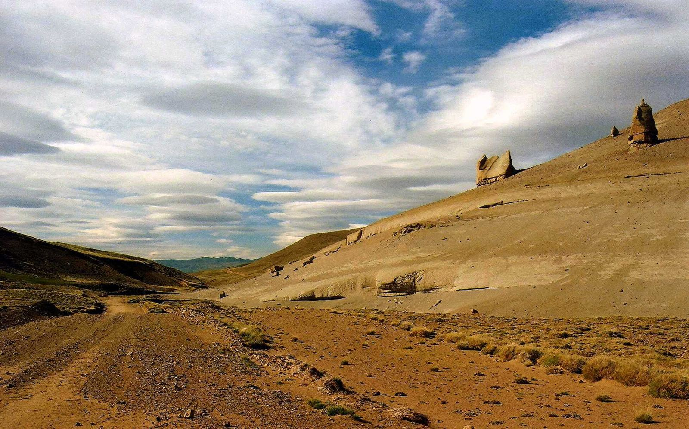
Landscape around Monte Zeballos, on Provincial Route 41
File: Paisaje en los alrededores del Monte Zeballos, Santa Cruz, Argentina - panoramio.jpg
Photo: rodoluca · CC BY-SA 3.0 · Wikimedia Commons National Route 3 at Cañadón León, south of Caleta Olivia
National Route 3 at Cañadón León, south of Caleta Olivia
File: Ruta Nacional 3 - Canadon Leon.JPG
Photo: Mikelzubi · CC BY-SA 3.0 · Wikimedia Commons View of the town of Los Antiguos, Santa Cruz
View of the town of Los Antiguos, Santa Cruz
File: LosAntiguosA.jpg
Photo: Rodarte · CC BY-SA 3.0 · Wikimedia Commons The bay at Puerto San Julián
The bay at Puerto San Julián
File: Bahia de San Julian.jpg
Photo: Msacla · CC BY-SA 3.0 · Wikimedia Commons Perito Moreno town hall
Perito Moreno town hall
File: Palacio Municipal de Perito Moreno.jpg
Photo: Ulises Icardi · CC BY-SA 4.0 · Wikimedia Commons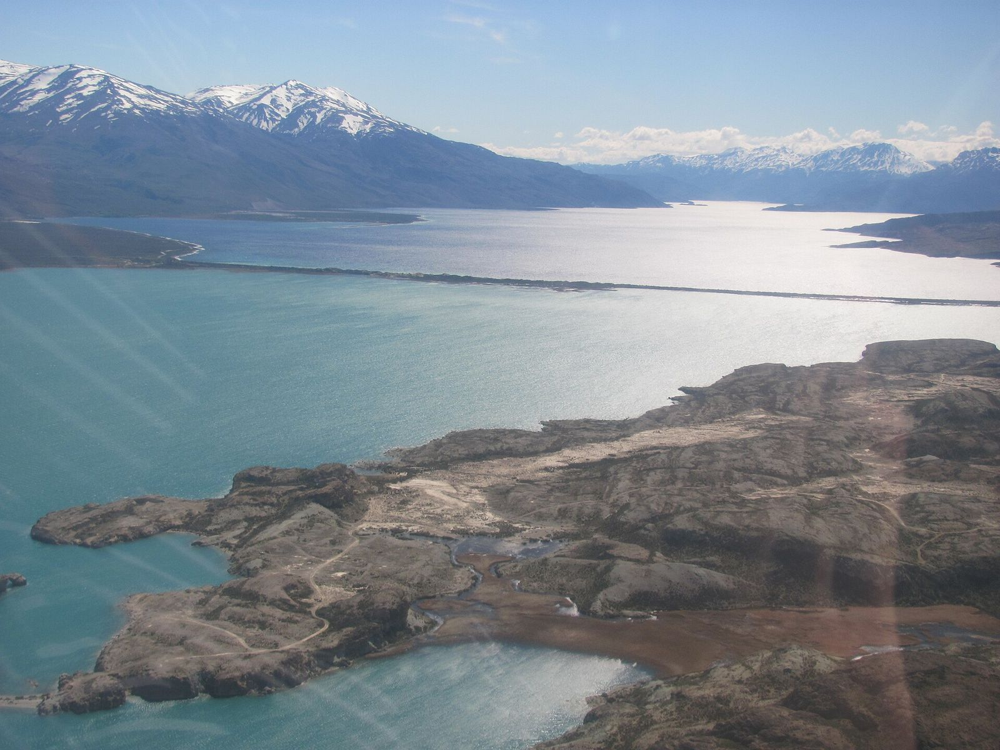
Aerial view of the isthmus between lakes Posadas and Pueyrredón
File: Unión de los Lagos Posadas Pueyrredón.jpg
Photo: Ppviorgullo · CC BY-SA 4.0 · Wikimedia Commons Lake Cardiel, near Gobernador Gregores
Lake Cardiel, near Gobernador Gregores
File: Lago Cardiel Argentina - panoramio.jpg
Photo: Hiroki Ogawa · CC BY 3.0 · Wikimedia Commons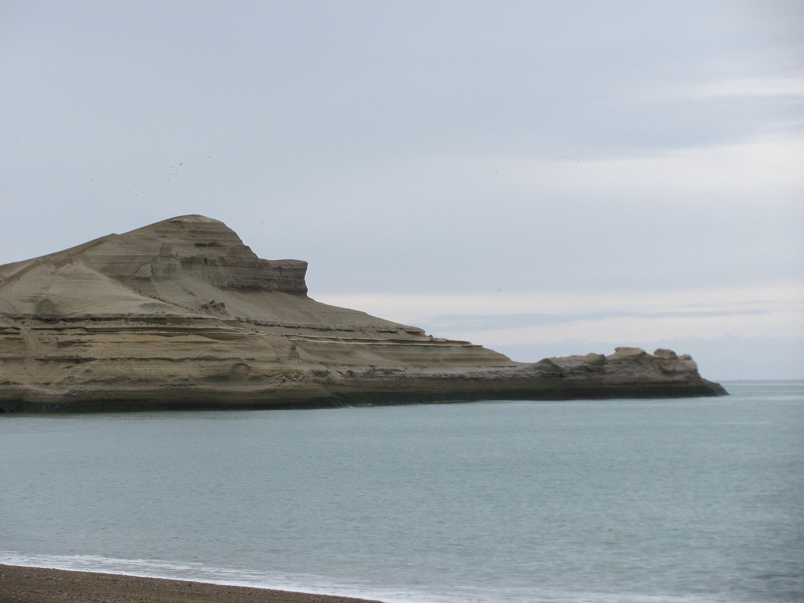
Coastline and Cabeza del León in Monte León National Park
File: Cabeza de Leon Parque Nacional Monte Leon Santa Cruz Argentina.JPG
Photo: Mikelzubi · CC BY 3.0 · Wikimedia Commons Street with old houses in Puerto Santa Cruz
Street with old houses in Puerto Santa Cruz
File: ID 873 Puerto Santa Cruz 039 CAZ.jpg
Photo: Carlos Zito · CC BY-SA 3.0 · Wikimedia Commons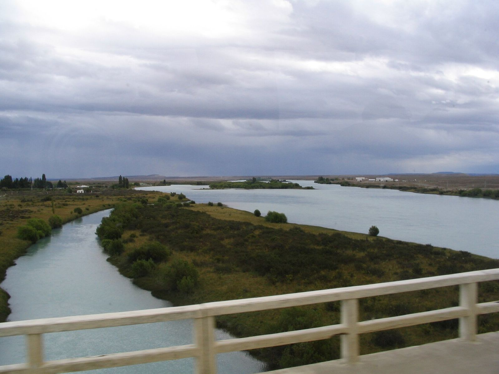
The Santa Cruz River at Comandante Luis Piedra Buena
File: River santa cruz argentina.JPG
Photo: James Cadwell · CC BY-SA 4.0 · Wikimedia Commons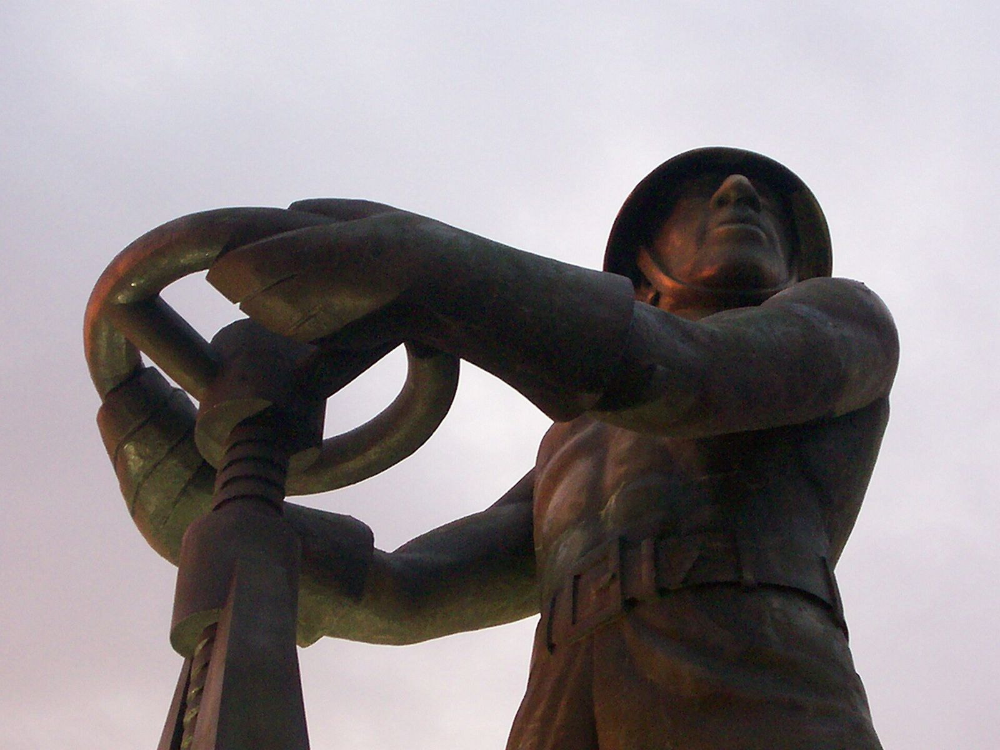
Monument to the Oil Worker (“el Gorosito”) in Caleta Olivia
File: Monumento al Obrero Petrolero (Caleta Olivia).jpg
Photo: Ulises Icardi · CC BY-SA 4.0 · Wikimedia Commons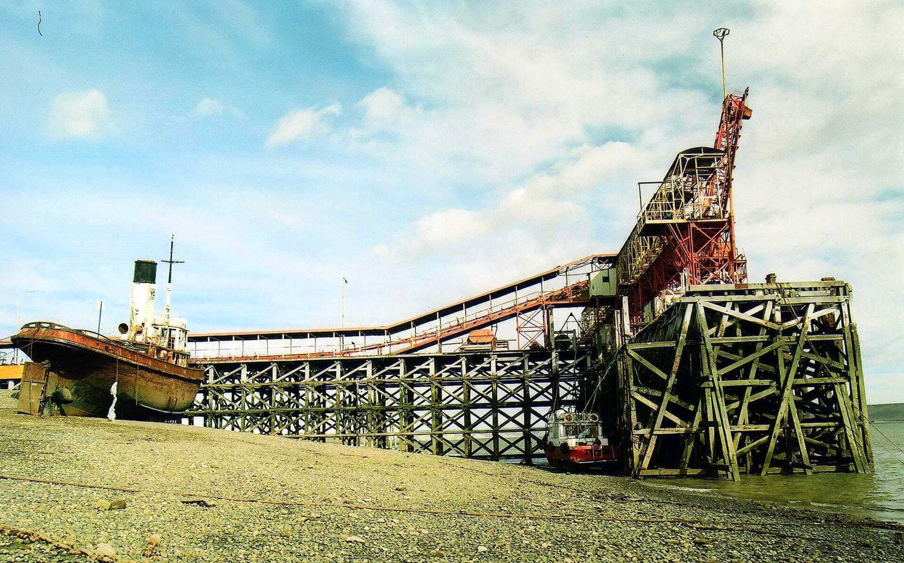
Old pier on the Río Gallegos waterfront
File: Viejo muelle, costanera de Río Gallegos, Santa Crruz, Argentina - panoramio.jpg
Photo: rodoluca · CC BY-SA 3.0 · Wikimedia Commons Panorama of El Calafate and Lake Argentino from Cerro Calafate
Panorama of El Calafate and Lake Argentino from Cerro Calafate
File: El Calafate. Panorámica II.JPG
Photo: Fernando de Gorocica · CC BY-SA 4.0 · Wikimedia Commons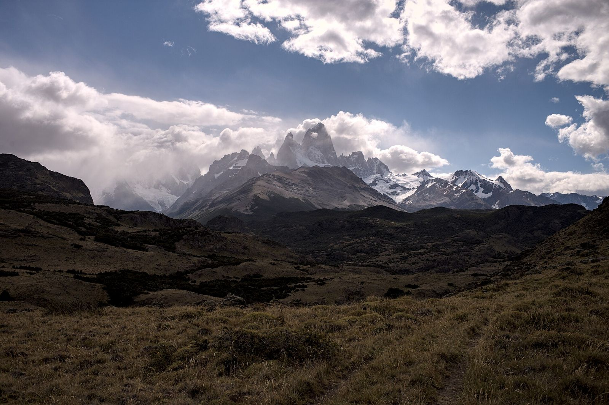
Mount Fitz Roy seen from south of El Chaltén
File: Los Glaciares - El Chalten Fitz Roy 003.jpg
Photo: Gedankenstuecke · CC BY-SA 4.0 · Wikimedia Commons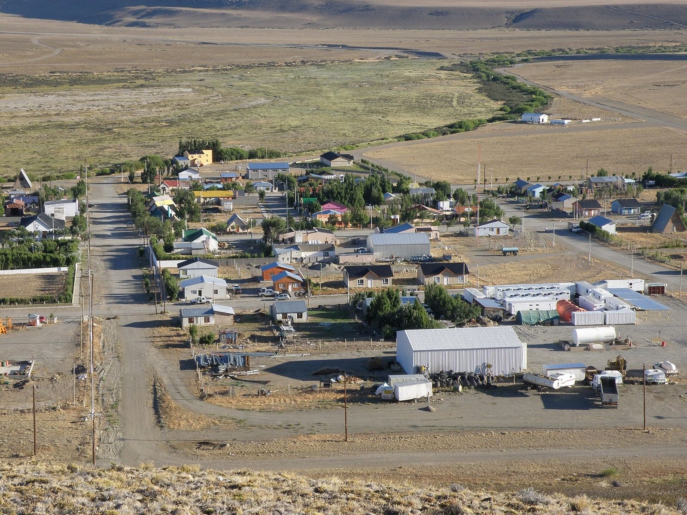
Aerial view of Tres Lagos
File: Tres lagos desde arriba - panoramio.jpg
Photo: alvaro errandonea · CC BY 3.0 · Wikimedia Commons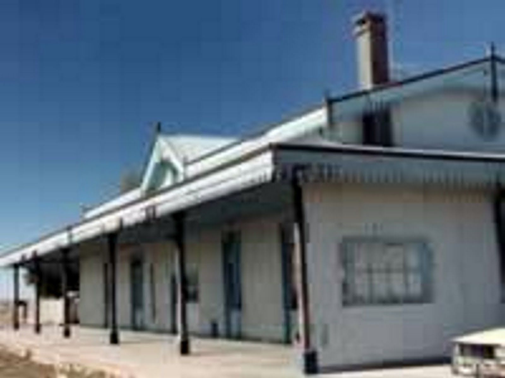
Old railway station in Pico Truncado
File: Est Pico Truncado FCGR 1.jpg
Photo: Daniel Alegre · Public domain · Wikimedia Commons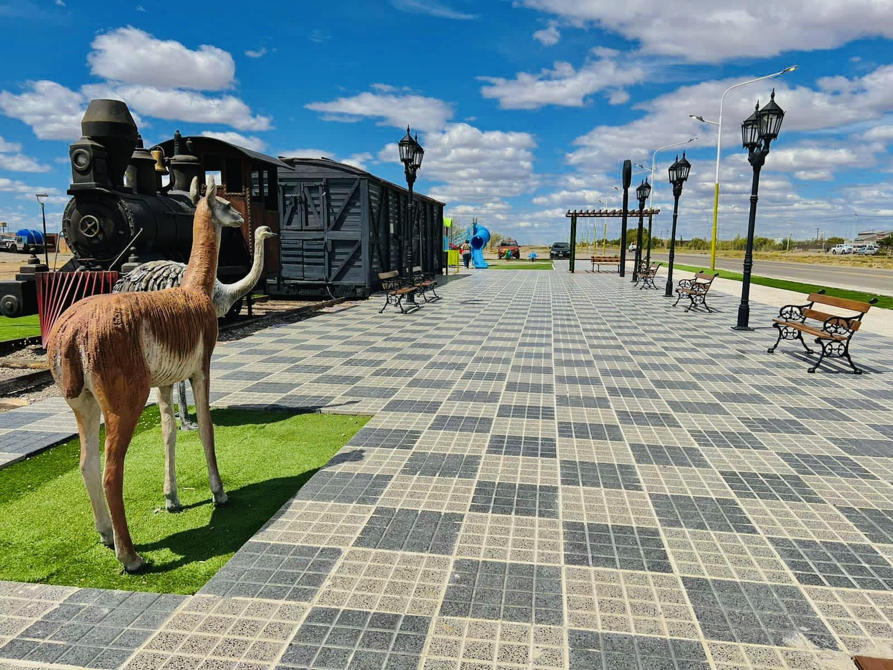
Railway promenade in Las Heras
File: Paseo ferroviario las heras santa cruz.jpg
Photo: josema carambia · CC BY-SA 4.0 · Wikimedia Commons Restored railway station in Jaramillo
Restored railway station in Jaramillo
File: Estación Jaramillo.jpg
Photo: Mikelzubi · CC BY-SA 4.0 · Wikimedia Commons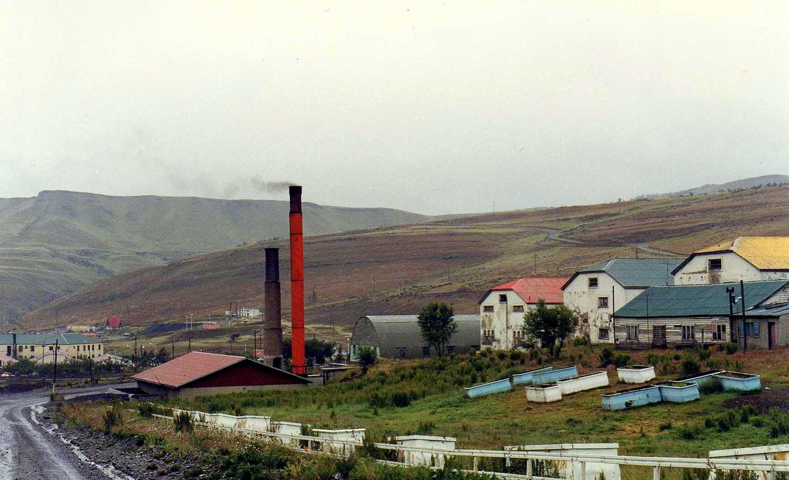
Mining village of Río Turbio
File: Villa minera de Río Turbio, Santa Cruz, Argentina.jpg
Photo: rodoluca · CC BY-SA 3.0 · Wikimedia Commons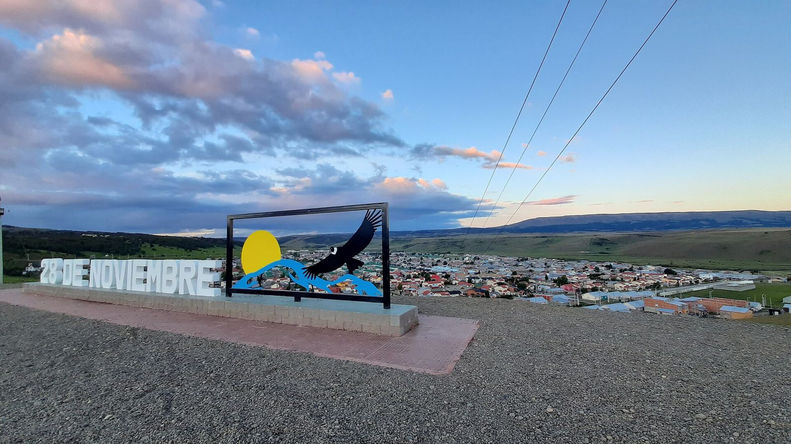
View of the town of 28 de Noviembre
File: 28deNoviembre.jpg
Photo: GsusESC · CC BY-SA 4.0 · Wikimedia Commons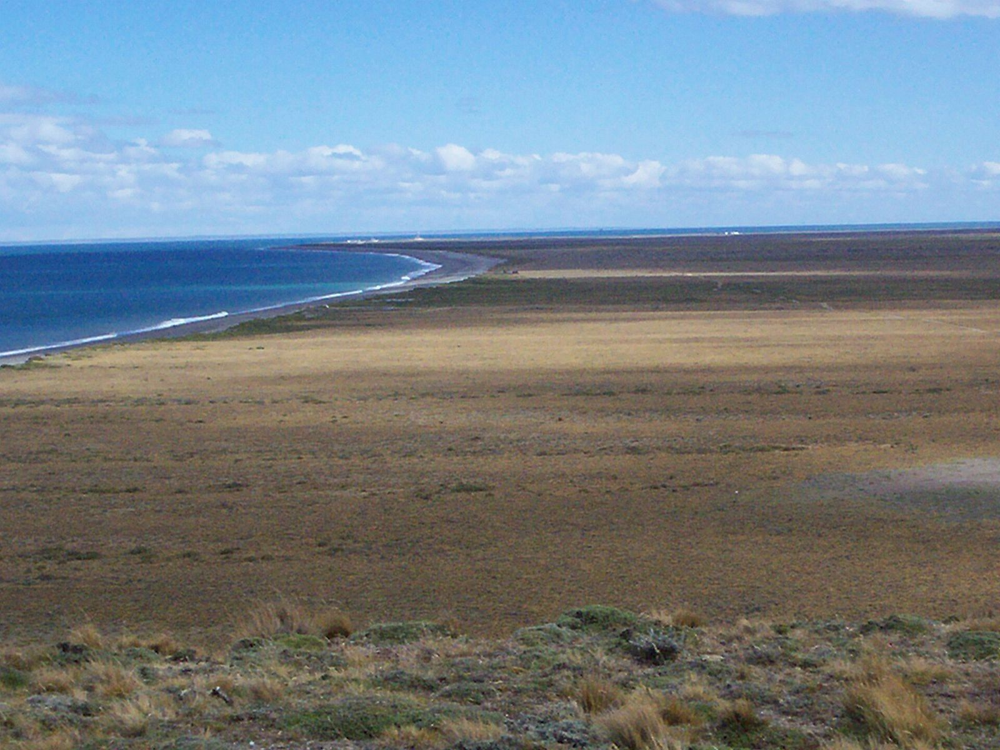
The mouth of the Strait of Magellan seen from the Cabo Vírgenes lighthouse
File: Boca del estrecho de Magallanes vista desde el faro Cabo Vírgenes.jpg
Photo: Ulises Icardi · CC BY-SA 4.0 · Wikimedia Commons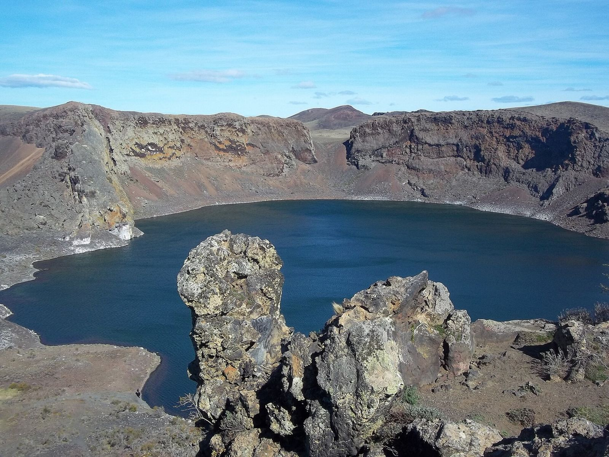
Laguna Azul inside the crater of a dormant volcano
File: LAGUNA AZUL ARGENTINA.jpg
Photo: Osarsan · CC BY 3.0 · Wikimedia Commons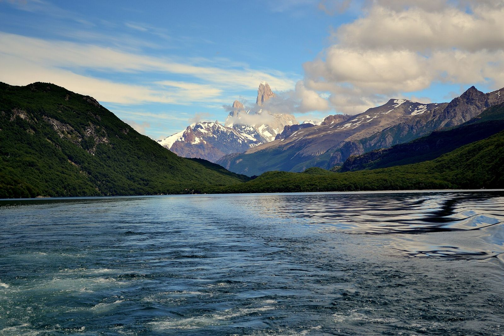
Mount Fitz Roy seen from Lago del Desierto
File: Fitz Roy- Lago del Desierto.JPG
Photo: Florenciabrayer · CC BY-SA 4.0 · Wikimedia Commons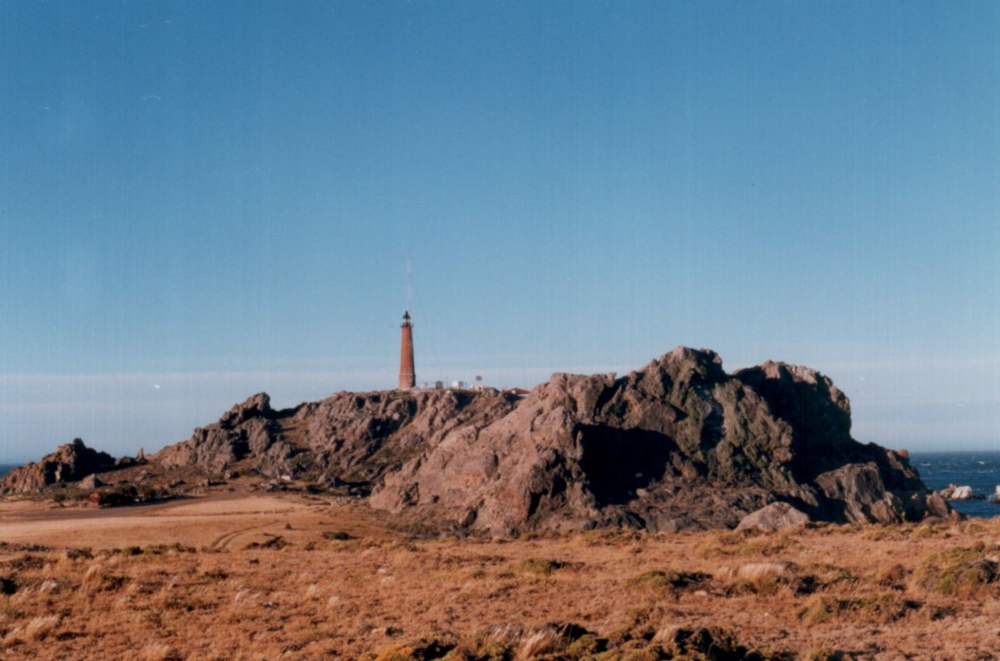
Cabo Blanco seen from the south
File: Cabo Blanco Argentina 2000.jpg
Photo: Mikelzubi · CC BY 3.0 · Wikimedia Commons Rockhopper penguins on Penguin Island
Rockhopper penguins on Penguin Island
File: Pingüinos de penacho amarillo, Isla Pingüino, Mar Argentino, Santa Cruz, Argentina - panoramio.jpg
Photo: rodoluca · CC BY-SA 3.0 · Wikimedia Commons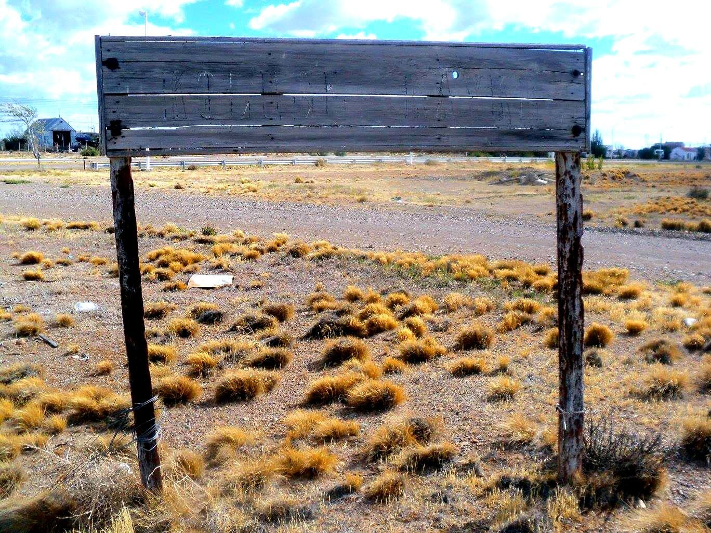
Sign of the former Koluel Kayke station with the village behind
File: Nomenclador kayke.jpg
Photo: Gonce · CC BY-SA 3.0 · Wikimedia Commons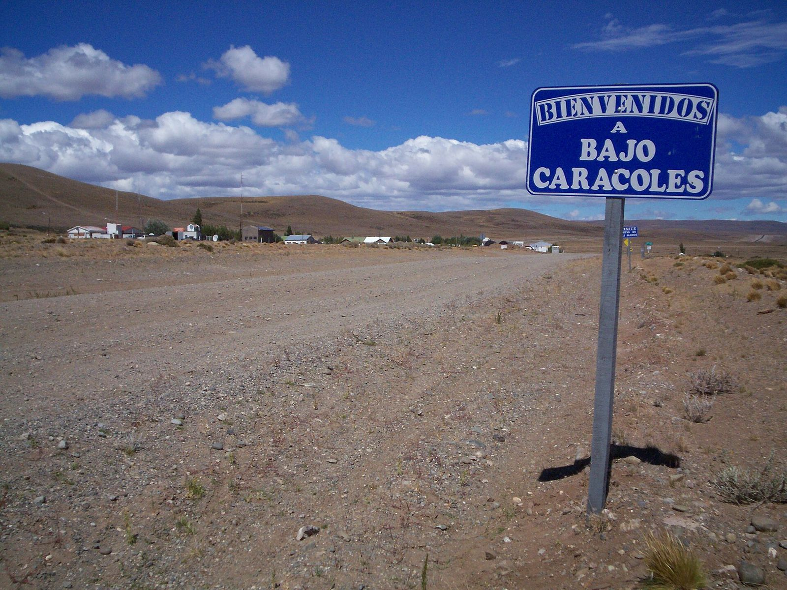
Approaching Bajo Caracoles on National Route 40
File: Acceso a Bajo Caracoles por la Ruta Nacional 40.jpg
Photo: Ulises Icardi · CC BY-SA 4.0 · Wikimedia Commons Replica of the founding blacksmith's shop in Gobernador Gregores
Replica of the founding blacksmith's shop in Gobernador Gregores
File: Herrería de Kuney Posne.jpg
Photo: Natifuzz · CC BY-SA 4.0 · Wikimedia Commons Gravel stretch of National Route 40 on the Santa Cruz steppe
Gravel stretch of National Route 40 on the Santa Cruz steppe
File: Ruta Nacional 40 Santa Cruz.jpg
Photo: Oscar871217 · CC BY 3.0 · Wikimedia Commons Gravel road to Alero Charcamata, in Parque Patagonia, south of Perito Moreno
Gravel road to Alero Charcamata, in Parque Patagonia, south of Perito Moreno
File: Alero charcamata Parque Patagonia Gustavo Calfin-5.jpg
Photo: ArgentinaTurismo · CC BY 4.0 · Wikimedia Commons Rock shelter with painted hands and circles at the Cueva de las Manos, Río Pinturas canyon
Rock shelter with painted hands and circles at the Cueva de las Manos, Río Pinturas canyon
File: Cueva de las Manos Argentina - panoramio (6).jpg
Photo: Hiroki Ogawa · CC BY 3.0 · Wikimedia Commons Caleta Olivia's coastal promenade next to the pebble beach of the Gulf of San Jorge
Caleta Olivia's coastal promenade next to the pebble beach of the Gulf of San Jorge
File: Costanera de Caleta Olivia.jpg
Photo: Mikelzubi · CC BY-SA 4.0 · Wikimedia Commons Boat stranded at low tide in the Gallegos River estuary
Boat stranded at low tide in the Gallegos River estuary
File: Marea baja, Ría del Gallegos, Santa Cruz, Argentina - panoramio.jpg
Photo: rodoluca · CC BY-SA 3.0 · Wikimedia Commons